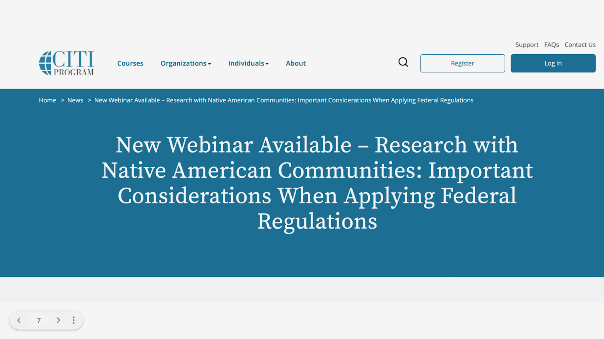
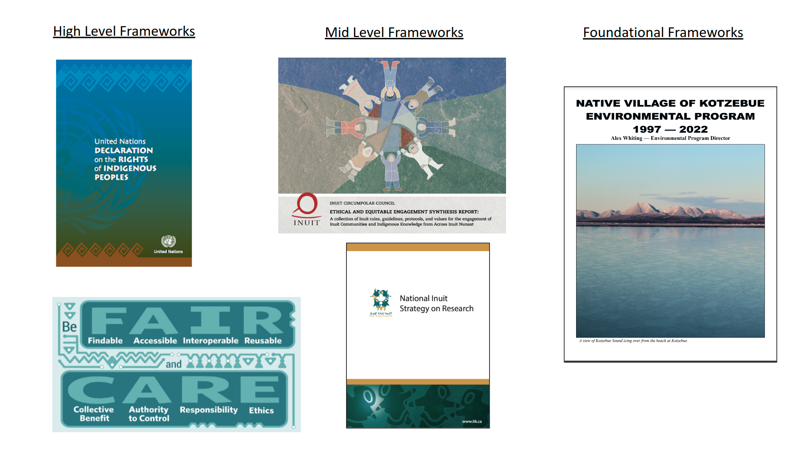

11 Human Subjects Research Considerations
11.1 Human Subjects Considerations
11.1.2 Learning Objectives
In this lesson, we will:
- Discuss research protocols including Institutional Review Boards
- Review principles and protocols relating with working with Indigenous communuities
- Examine case studies involving human subjects
11.1.3 Introduction
This part of the course offers an introduction to research involving human subjects. It was developed with input from ELOKA and the NNA-CO, and is a work-in-progress – this is the first time we are offering this training. The training introduces ethics issues in a broad way and includes discussion of social science data and open science, but the majority of the section focuses on issues related to research with, by, and for Indigenous communities. We recognize that there is a need for more in-depth training and focus on open science for social scientists and others who are not engaging with Indigenous Knowledge holders and Indigenous communities, and hope to develop further resources in this area in the future. Many of the data stewardship practices that have been identified as good practices through Indigenous Data Sovereignty framework development are also relevant for those working with Arctic communities that are not Indigenous, although the rights frameworks and collective ownership is specific to the Indigenous context.
The examples we include in this training are primarily drawn from the North American research context. In future trainings, we plan to expand and include examples from other Indigenous Arctic contexts. We welcome suggestions and resources that would strengthen this training for audiences outside of North America.
We also recognize the importance of trainings on Indigenous data
sovereignty and ethics that are being developed and facilitated by
Indigenous organizations and facilitators. In this training we offer
some introductory material but there is much more depth offered in IDS
specific trainings. We include some suggestions of organizations
offering further training in the “resources” section and encourage
participants to seek out these opportunities to deepen their
understanding. And there are several sessions this week with some of
the authors of the frameworks and protocols that will be discussed,
including:

In addition to equity related challenges in promoting open access, there are also different disciplinary norms and requirements that can create challenges for the adoption of open science practices. For example, traditional social science methods training and IRB processes emphasize confidentiality and privacy. Social scientists generally lack access to training about benefits of sharing data. On the other hand, social scientists are often trained to be attuned to issues of equity and access, including issues related to information equity. Those who lack this background may not give adequate attention or time to the process of partnering with communities. The Arctic Horizons Report reviewed challenges around social science data management. In 2020, a workshop organized by the Arctic Data Center reviewed some of the challenges for sharing and reusing social science data, including:
- Data heterogeneity, including “unstructured” data that is not always
well supported by data repositories;
- A dearth of metadata support for social sciences, with repositories
not always offering relevant metadata fields;
- A lack of “formal vocabularies” that limits findability of social science data in searches; Limited training and support in data management practices for social scientists; limited examples using social science data in interdisciplinary trainings.
In addition to these challenges, a number of broader concerns about sharing data were identified, including:
- Concerns about proper handling of sensitive data; importance of
upholding IRB and ethics requirements, data sharing/use agreements;
- Importance of context - researchers may feel that data reuse is too
difficult given lack of contextual knowledge;
- Concerns about upholding Indigenous data sovereignty.
11.1.4 The role of IRBs, funding agencies, and Indigenous data
In the United States, Institutional Review Boards (IRBs; in Canada they are referred to as Research Ethics Boards or REBs) focus on ensuring ethical treatment and protection of research subjects with a particular focus on vulnerable populations and ethical management of data. For projects proposing research that involves Indigenous peoples in the United States, IRBs will often refer the review to Tribal IRBs, which are research review boards established and implemented directly by Tribal Nations. Tribal IRBs reflect and respond to community needs, changes in research, and revisions to research policy (Around Him et al. 2019). Oversight mechanisms range from federally registered review bodies and policy development to community-specific frameworks and approaches (see Around Him et al. 2019 for differentiation, justification and authority).

In addition to IRB review, universities require ethics training for researchers who are doing research with human subjects, including Indigenous Peoples. Many universities use the web-based, third-party CITI training program, which offers different short courses. A basic training course for social and behavioral science researchers covers the history of ethical misconduct in research, how human subjects research is defined, federal regulations that govern research practice, assessing risk, informed consent, privacy and confidentiality, and ethics requirements for different categories of vulnerable populations including prisoners and children. While the CITI human subjects trainings touch on topics related to Indigenous peoples, they are not at all comprehensive. A CITI webinar, “Research with Native American Communities: Important Considerations when Applying Federal Regulations” introduces more topics. The r-ETHICS training (Ethics Training for Health in Indigenous Communities Study) is starting to become an acceptable, recognizable CITI addition for IRB training by tribal entities.
Specific universities have adopted tribal consultation policies (such as the Arizona Board of Regents’ (ABOR) Tribal Consultation policy (1-118) adopted in 2016; University of Wisconsin System Board of Regents tribal consultation policy adopted in 2021; Washington State University EP 41 adopted in 2021). These policies highlight where consultation is expected/required and what the process should be (Marley 2019).
In the United States, the Inter-Agency Arctic Research Policy Committee has established the Principles for Conducting Research in the Arctic (2018) with input from the Arctic research community, which are:
- Be Accountable
- Establish Effective Communication
- Respect Indigenous Knowledge and Cultures
- Build and Sustain Relationships
- Pursue Responsible Environmental Stewardship
Along with the Principles for Conducting Research in the Arctic, the Arctic Research Consortium of the United States (ARCUS) has also published a list of resources: Conducting Research with Northern Communities - Documented Practices for Productive, Respectful Relationships Between Researchers and Community Members (https://www.arcus.org/resources/northern-communities).
IRBs are not necessarily aware of these principles but national funding agencies may use them to inform proposal reviewers about expectations for research projects that work with Arctic communities.
 ## Working with Arctic Communities
## Working with Arctic Communities
11.1.5 IDS Frameworks
There has been increasing emphasis on development of frameworks to support ethical research and data stewardship grounded in Indigenous understandings and world views. The emergence of national and global networks focusing on Indigenous data sovereignty has supported the development of some of these frameworks. For example, the Global Indigenous Data Alliance (GIDA) developed the CARE principles in response to the emergence of the FAIR principles. CARE is a set of high-level principles that are broad enough to encompass more specific frameworks and principles developed by International and national Indigenous networks, organizations, and Tribes. This alliance is supported by three national networks, the United States Indigenous Data Sovereignty Network (USIDSN), Te Mana Raraunga Maori Data Sovereignty Network, and the Maiam nayri Wingara Aboriginal and Torres Strait Islander Data Sovereignty Collective. The latter networks each have worked within their respective national contexts to develop IDS principles at a “mid-level.”
These frameworks are being developed at different governance levels, from “high level” frameworks that are global in scale and therefore more general to mid-level frameworks that are developed at a national scale or by a subset of Indigenous Peoples/Nations (such as circumpolar Inuit or Inuit within the national level in Canada), to foundational level frameworks that are developed at the Tribal or community scale.
It is important for researchers to be aware of the different frameworks that can inform and guide ethical research practice and data management. Frameworks developed at the high or mid-level do not replace foundational frameworks. In the absence of a written framework at the tribal/community scale, the practices of strong consultation and engagement outlined in mid-level frameworks can help inform the development of an ethical approach.

One of the drivers of community concerns is the colonial practice of extracting knowledge from a place or group of people without respect for local norms of relationship with people and place, and without an ethical commitment to sharing and making benefits of knowledge accessible and accountable to that place. Extractive research can be defined as research that is not mutually beneficial, and the results primarily benefit the researcher. Such approaches to knowledge and data extraction follow hundreds of years of exploration and research that viewed science as a tool of “Enlightenment” yet focused exclusively on benefits to White, European (or “southern” from an Arctic community perspective) researchers and scientists. This prioritization of non-local perspectives and needs (to Arctic communities) continues in Arctic research.
One result of this approach to research has been a lack of access for Arctic residents to the data and knowledge that have resulted from research conducted in their own communities. Much of this data was stored in the personal files or hard drives of researchers, or in archives located in urban centers far from the Arctic.
11.1.6 Indigenous data governance and sovereignty

All governing entities, whether national, state, local, or tribal, need access to good, current, relevant data in order to make policy, planning, and programmatic decisions. Indigenous nations and organizations have had to push for data about their peoples and communities to be collected and shared in ethical and culturally appropriate ways, and they have also had to fight for resources and capacity to develop and lead their own research programs.
11.1.6.1 Indigenous data definitions:
Indigenous data sovereignty “…refers to the right of Indigenous peoples to govern the collection, ownership, and application of data about Indigenous communities, peoples, lands, and resources (Rainie et al. 2019). These governance rights apply “regardless of where/by whom data is held (Rainie et al. 2019).
Some Indigenous individuals and communities have expressed dissatisfaction with the term “data” as being too narrowly focused and abstract to represent the embedded and holistic nature of knowledge in Indigenous communities. Knowledge sovereignty is a related term that has a similar meaning but is framed more broadly, and has been defined as:
“Tribal communities having control over the documentation and production of knowledge (such as through research activities) which relate to Alaska Native people and the resources they steward and depend on” (Kawerak 2021).
Indigenous data is “data in a wide variety of formats inclusive of digital data and data as knowledge and information. It encompasses data, information, and knowledge about Indigenous individuals, collectives, entities, lifeways, cultures, lands, and resources.” (Rainie et al. 2019)
Indigenous data governance is “The entitlement to determine how Indigenous data is governed and stewarded” (Rainie et al. 2019)
High level frameworks in support of Indigenous Data Sovereignty:
- The UN Declaration on the Rights of Indigenous Peoples, which recognizes the collective rights of Indigenous peoples. Article 18 of UNDRIP recognizes the right of Indigenous Peoples to participate in decision-making about matters that affect their rights; Article 19 recognizes the requirement for states to consult and cooperate with Indigenous Peoples to gain their Free Prior and Informed Consent on legislation that affects them. Other international protocols such as Nagoya Protocol on access and benefit sharing and the Cartagena Protocol on Biosafety (UNCBD) also recognize Indigenous rights with reference to intellectual property and the right to benefit from Indigenous knowledge and data as the owners/stewards of that data.
Mid-level frameworks:
- The First Nations Principles of OCAP® (ownership, control, access, possession). Developed by the First Nations Information Governance Centre, which has developed good educational materials explaining the principles and how to implement them, as well as a training course (available on their website; the class has a registration fee).
- Inuit Circumpolar Council’s Ethical and Equitable Engagement Synthesis. This synthesis summarizes the process and approach that ICC took to develop principles of ethical and equitable engagement for Inuit, which involved broad engagement and input from Inuit in Alaska, Canada, Greenland, and Chukotka. ICC is working on a full set of principles, which will be released after they have gone through review.
- National Inuit Strategy on Research. Developed by Inuit Tapiriit Kanatami, the National Inuit Organization of Canada, with input from the Inuit regions of northern Canada. The research strategy discusses Indigenous data sovereignty.
- In Alaska, the Alaska Native Knowledge Center developed Guidelines for Respecting Cultural Knowledge. These include specific guidelines for authors and illustrators, curriculum developers and administrators, educators, editors and publishers, document reviewers, researchers, native language specialists, native community organizers, and the general public.
- Principles of Māori Data Sovereignty (Te Mana Rararunga) - Developed by the Maori Data Sovereignty Network (Maui Hudson is a founding member of this network).
- Maiam nayri Wingara key principles developed by the Maiam nayri Wingara Aboriginal and Torres Strait Islander Data Sovereignty Collective.
Foundational level frameworks:
Tribal or community-level expectations/frameworks - such as Native Village of Kotzebue’s Research Protocol (Whiting 2022), which requests that researchers follow ethical research practices pertaining to informed consent and:
- Inform the Tribe of plan to research and continue to inform them after permission has been granted;
- Consult with the Tribe in project development, implementation and planning.
- Explain the purposes, goals, time frame, and methodology of the
research, including the sponsoring institutions and
affiliations of the research project and identify the person in
charge, as well as all investigators involved in the research,
and the need for consultants, guides, or interpreters and
proposed compensation rates for same
- Share results with the Tribe in non-technical language
- Give credit to those contributing to the research project by acknowledging the Intellectual Property Rights of individual Tribal citizens taking part in the research (unless there are requirements for anonymity)
- Recognize that all information belongs to the Tribe and divulgence of such information is expressly forbidden without permission of the Tribe;
- Compensate Indigenous Knowledge holders fairly for sharing their knowledge.
11.1.7 Co-production of knowledge
Here, we define co-production of knowledge as the contribution of various knowledge sources, and capacity sharing from different rights holders and stakeholders in the context of co-creating knowledge and information to inform research projects and environmental decision-making (Lemos & Morehouse, 2005). Many argue that co-production of knowledge will increase the usability and relevance of science for society (Lemos & Morehouse, 2005; Meadow et al., 2015; Wall et al., 2017). Based on a literature review from Djenontin & Meadow (2018) of successful examples of co-production, here are several themes of successful co-production.
Development, design and implementation components
Rights holders and stakeholders’ needs should drive the project. Several approaches to help ensure this include: * co-defining research questions * co-conceptualizing and co-designing the research project * co-leadership
In the current research framework that involves timely deadlines for finishing and producing research, there are many challenges that include time and resources. Many of these challenges stem from research that is still founded on a western timeline. Navigating these challenges is a work in progress, however the foundation starts at building long-term relationships.
11.1.8 Human Subject Case Examples and Discussion
11.1.8.1 Case One
** Discussion ** This case study illustrates the important issue of explicit consent. 1. Are there any other ethical considerations are apparent? 2. Does consent play a role in your research, and if so, how does consent inform and influence your research methodologies?
11.1.8.2 Case Two
This is a case study of research conducted in Alaska. The research occurred in the 1950s and the purpose of the study was to understand how the thyroid gland helps humans adapt to the Arctic climate. Research subjects were given a radioactive medical tracer - idoine-131. There were 102 Native American research subjects, and 19 Air Force and Army service men. Most of the Native American subjects did not realize they were part of research - they thought they were receiving medical attention. Furthermore, none of the research subjects knew that they were given a radioactive medical tracer.
Read the full article here: https://www8.nationalacademies.org/onpinews/newsitem.aspx?RecordID=5106
Discussion While this is an extreme example of lack of consent and extractive research practices, it illustrates the problematic history of between researchers and Indigenous Peoples. 1. What elements of this example relate to any of the policies or principles we have discussed? 2. What are the main takeaways from our discussion on research and data ethics so far?
11.1.8.3 Case Three
The following case is from an NSF funded project with the Association for Practical and Professional Ethics, titled “Do the Ends Justify the Means? The Ethics of Deception in Social Science Research”. While these cases are not directly related to the Arctic, they bring up interesting points that are relevant to interdisciplinary and social science research beyond a specific geographic scope. For more information, visit the site: https://onlineethics.org/cases/graduate-research-ethics-cases-and-commentaries-volume-1-1997/do-ends-justify-means-ethics
Ann Smith is a social psychologist who wants to study attitude change. She submits a proposal to her institution outlining details of a study that will examine the attitude change of participants following a workshop on environmental issues. Smith plans to identify attitude change by administering a pretest and a post-test. She is worried, however, that the participants will recognize that she is looking for changes in their attitudes and that this knowledge will influence their answers on the pos-ttest. To address this problem, she plans to disguise the issues she is most interested in; when she administers the tests, she will give a very broad explanation that does not fully disclose the nature of the study. Her proposal includes these procedures and an explanation of why she believes they are necessary; she also includes a plan to “debrief” the subjects (tell them the real purpose of the study) after they finish taking the second test.
Discussion Questions 1. What might be the benefits of this research, if any? What risks to subjects, if any, do you identify? 2. What issues should members of the Institutional Review Board (IRB)(1) raise regarding Smith’s proposal? 3. If you were a member of the IRB, how would you weigh the benefits of the research with the risks to subjects in this case? 4. Based on your assessment of the benefits and risks, would you approve Smith’s proposal as submitted? If not, what changes would you suggest? 5. Is deception of subjects ever justifiable? If so, under what conditions? 6. How might conducting experiments that involve deception of subjects affect the researcher? Is there any way in which such experiments could reflect upon science itself? If so, how?
11.1.1 Social science and open data